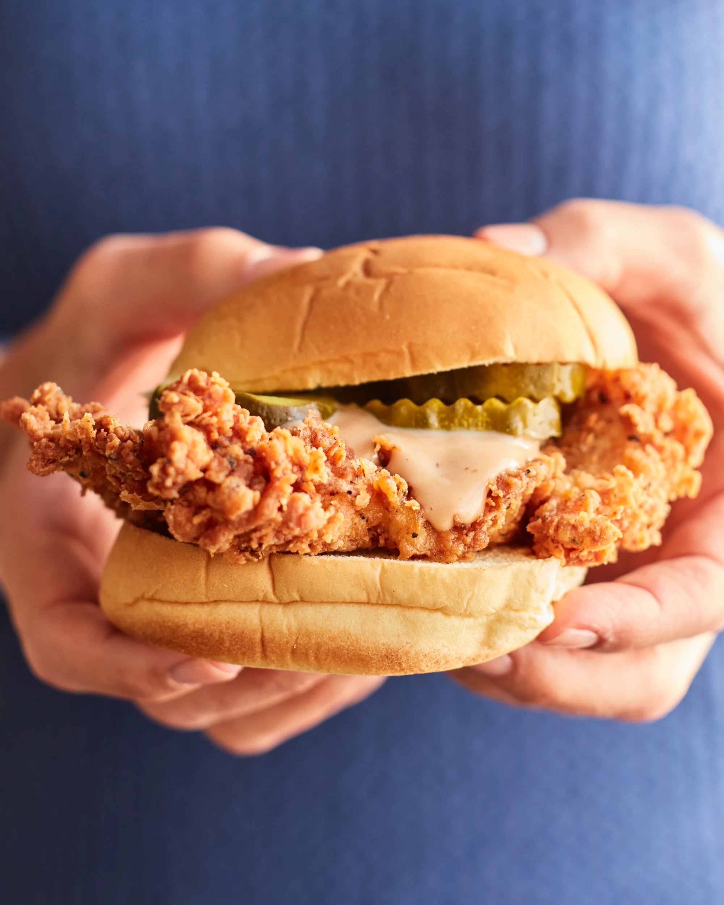

Fried Chicken

Description
Ingredients
Buttermilk Brine:
- 2 Cups Buttermilk
- 2 Tbsp Kosher Salt
- 4 Boneless Skinless Chicken Thighs
Dry Mixture:
- 2 Cups Flour
- 2 Tbsp Baking Powder
- 1 Tsp Garlic Powder
- 1 Tsp Onion Powder
- 1/2 Tsp Kosher Salt
- 1/2 Tsp 1/2 Teaspoon Kosher Salt
- 2 Tbsp Season Salt
- 1/4 Tsp Cayenne Pepper
Wet Mixture:
Spicy Oil:
- 1 Garlic Clove
- 1 Pinch Kosher Salt
- 2 Tbsp Cayenne Pepper
- 1/2 Tsp Smoked Paprika
- 1/2 Tsp Cumin
Mustard Aioli:
- 1 Grated Garlic Clover
- 1 Tbsp Dill Pickle Brine
- 1/2 Cup Mayonnaise
- 1 Tbsp Whole Grain Mustard
- 1/4 Tsp Smoked Paprika
Steps
-
Tenderize the Chicken--Place a chicken thigh between two layers of plastic wrap.
Use a meat mallet or rolling pin to pound the meat until it measures 1/4th inch thick.
You want the meat to be an even thickness so that it cooks evenly. Don't hit the chicken so hard that it tears.
-
Prepare Buttermilk Brine-— Stir 2 cups buttermilk with 2 tablespoons kosher salt until dissolved. Repeat as needed
to fully cover the chicken. Place chicken and brine in a ziplock bag on a rimmed plate and refrigerate for at least
1 hour, or up to 24 hours.
- Make Spicy Oil-— In a bowl, combine 1 grated garlic clove, a pinch of kosher salt, ¼ cup peanut oil, 2 tablespoons cayenne, ½ teaspoon
smoked paprika, and ½ teaspoon cumin. Mix and set aside with a pastry brush.
-
Stir Up The Mustard-- Toss 1 grated garlic clove, 1 tbsp pickle brine, ½ cup mayo, 1 tbsp whole grain mustard, and ¼ tsp smoked paprika
in a bowl. Mix it up and park it with a spoon for later.
-
Prep the Toppings-- Butter brioche buns, broil until golden, then keep warm at 200°F. Shred iceberg lettuce by quartering and slicing it
thinly—slice 2 dill pickles into coins. Set everything aside.
-
Get Ready to Fry -- Heat 2 quarts of peanut oil (or veggie oil if needed). In a bowl, toss together 2 cups flour, 2 tbsp cornstarch,
2 tsp baking powder, 1 tsp garlic powder, 1 tsp onion powder, ½ tsp salt, ½ tsp black pepper, and ¼ tsp cayenne.
-
Prep the Wet Mixture & Gear-- Whisk 2 cups buttermilk and 1 egg in a bowl. Grab your tools: Dutch oven, frying thermometer, metal tongs,
spider strainer, instant-read thermometer, and a wire rack over a baking sheet.
-
Coat Chicken-- Heat 2 inches of oil in a deep pot to 325°F with a thermometer. Set up a wire rack. Mix dry and wet ingredients in separate
bowls. Dredge chicken in dry, dip in wet, dredge in dry again, shake off excess, and set on the rack.
-
Fry the Chicken-- Heat 2 inches of oil to 325°F and set up a wire rack. Mix dry and wet ingredients in separate bowls. Dredge chicken
dry → wet → dry, then fry 2 pieces at a time for 10–12 minutes, turning as needed. Keep oil around 325°F. Transfer to the rack, check for 175°F internal temp,
and brush with spicy oil if you like it hot.
-
Assemble and Serve-- Spread aioli on both sides of the warm buns. Layer 4–5 pickle slices on the bottom bun, top with a fried chicken thigh,
add ¼ cup shredded lettuce, and crown with the top bun. Serve right away and repeat for all four sandwiches.
Home